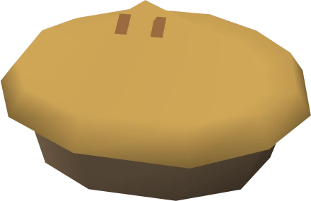

Thurgo's Redberry Pie

The only pie good enough to win the heart of the Imcando dwarf, Thurgo.
Every runescape player was introduced to this delicacy during the Knights Sword quest.
One must bake the perfect pie in order to obtain the sacred bluerite ore.
Ingredients
- Pot of flour
- 3/4 cup sugar
- 3 Tbsp. cornstarch
- 1-1/2 cups water
- 3 cups fresh redberries
- 1 cup fresh raspberries
- baked pie crust (16 inches)
Recipe Instructions
- Use flour on water to create a pastry dough
- Use pastry dough on pie dish to create a pie shell
- Use redberries on pie shell to create an uncooked berry pie
- Cook/bake on a range (preferably in lumbridge castle) until golden brown
- Serve to Thurgo and recieve your bluerite ore
Home